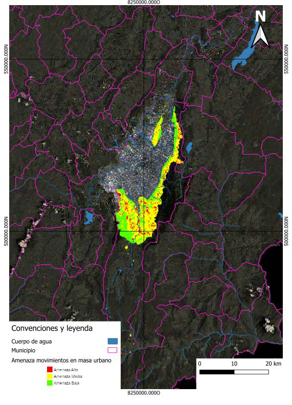
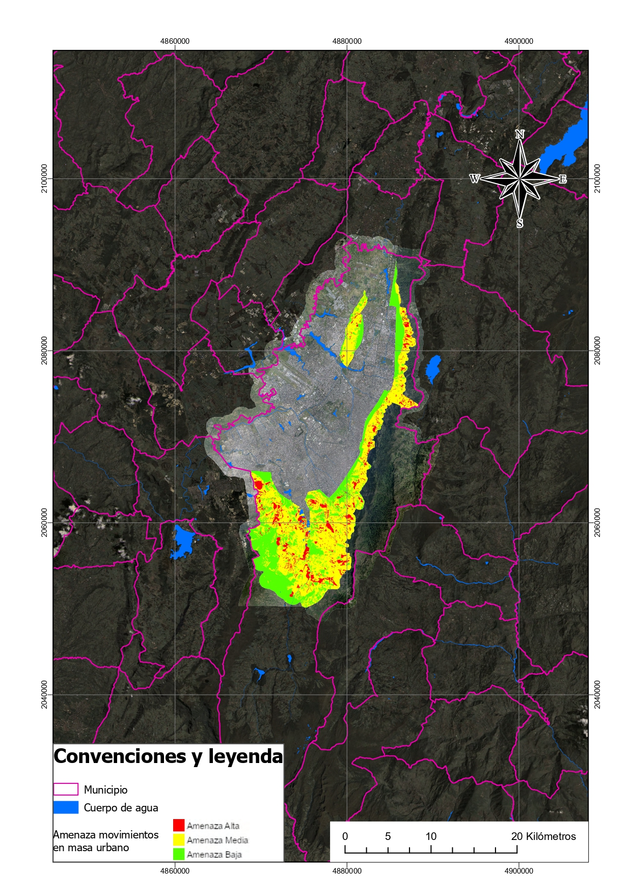

Tarea 02 – Conexión y Navegación de Servicios Geográficos
1 Introducción
La interoperabilidad en los Sistemas de Información Geográfica (SIG) permite la integración de datos provenientes de múltiples fuentes mediante estándares abiertos definidos por el Open Geospatial Consortium (OGC).
Estos estándares facilitan la conexión entre plataformas SIG, bases de datos espaciales y servicios web geográficos, permitiendo que diferentes aplicaciones puedan compartir información sin importar el software utilizado.
En esta práctica se evaluó la conexión a diversos servicios geográficos disponibles en Colombia, utilizando herramientas como QGIS y ArcGIS Pro, con el objetivo de analizar la disponibilidad de datos, la posibilidad de edición, el acceso a atributos y las opciones de visualización cartográfica.
2 Objetivos
2.1 Objetivo General
Analizar la conexión y navegación de servicios geográficos remotos y datos locales dentro de un entorno SIG.
2.2 Objetivos Específicos
- Identificar los principales estándares de interoperabilidad geográfica.
- Conectarse a servicios WMS, WFS y WCS disponibles en Colombia.
- Integrar datos locales en formato Shapefile y GeoTIFF.
- Analizar las capacidades de edición, visualización y consulta de atributos.
3 Marco Teórico
3.1 Interoperabilidad en SIG
La interoperabilidad permite que distintos sistemas puedan intercambiar información geográfica sin perder su estructura ni significado.
Los estándares del OGC facilitan este proceso mediante protocolos y formatos que permiten compartir datos espaciales en internet.
3.2 Estándares OGC utilizados
3.2.1 WMS – Web Map Service
Permite visualizar mapas generados en el servidor remoto.
El usuario recibe únicamente una imagen renderizada del mapa, por lo que no es posible editar los datos.
Características:
- Visualización de mapas remotos
- No permite edición
- No permite acceso a tabla de atributos
- Alta compatibilidad con clientes SIG
3.2.2 WFS – Web Feature Service
Permite acceder a datos vectoriales completos, incluyendo su geometría y tabla de atributos.
Características:
- Permite consultas espaciales
- Permite edición si está habilitado como WFS-T
- Permite descarga de datos
3.2.3 WCS – Web Coverage Service
Proporciona acceso a datos raster geoespaciales, como imágenes satelitales o modelos de elevación.
Características:
- Entrega coberturas raster
- Permite análisis espacial
- No maneja geometrías vectoriales
4 Tabla de Fuentes de Información
| Tipo | Nombre | Fuente | Sistema de Coordenadas |
|---|---|---|---|
| WMS | Amenaza Movimientos en Masa Bogotá | Catastro Bogotá | EPSG:4326 |
| WFS | Límites territoriales de Colombia | IGAC | EPSG:9377 |
| WCS | Ortoimagen Bogotá 2017 | UAECD | EPSG:4326 |
| Shapefile | Cuerpo de Agua Bogotá | Datos Abiertos Bogotá | EPSG:4326 |
| GeoTIFF | Ortoimagen Cundinamarca | IGAC | EPSG:9377 |
5 Metodología
La metodología aplicada en esta práctica consistió en los siguientes pasos:
- Identificación de servicios geográficos disponibles en portales oficiales.
- Conexión a servicios WMS, WFS y WCS desde software SIG.
- Descarga e incorporación de datos locales.
- Evaluación de la capacidad de edición y consulta.
- Generación de mapas y exportación cartográfica.
6 Productos Cartográficos
6.1 Mapa generado en QGIS

El mapa generado en QGIS integra diferentes fuentes de información geográfica, incluyendo servicios web y datos locales. La simbología aplicada permite identificar claramente los diferentes elementos del territorio.
6.2 Mapa generado en ArcGIS Pro

Este mapa muestra la integración de servicios remotos dentro del entorno de ArcGIS Pro, destacando la visualización de capas raster y vectoriales.
7 Análisis de Resultados
7.1 Edición de geometrías
Los formatos que permiten edición directa son:
- Shapefile
- WFS (cuando está habilitado como WFS-T)
Los servicios que no permiten edición son:
- WMS
- WCS
Esto se debe a que estos servicios entregan únicamente imágenes o coberturas raster sin geometrías editables.
7.2 Acceso a tabla de atributos
Se identificó que los siguientes formatos permiten acceso a tabla de atributos:
- Shapefile
- WFS
En contraste, los servicios WMS no proporcionan información tabular asociada a las capas.
7.3 Cambio de simbología
Fue posible modificar la simbología en:
- Shapefile
- WFS
- GeoTIFF
- WCS
Sin embargo, en los servicios WMS la simbología está definida por el servidor remoto.
8 Discusión
El uso de servicios geográficos interoperables representa una ventaja significativa en proyectos de gestión territorial, planificación urbana y análisis ambiental.
Los servicios WFS permiten acceder a información actualizada en tiempo real, evitando la duplicación de datos y facilitando el trabajo colaborativo entre diferentes instituciones.
Por otro lado, los servicios WMS resultan especialmente útiles para visualización rápida de información geográfica sin necesidad de descargar grandes volúmenes de datos.
9 Conclusiones
La práctica permitió comprender el funcionamiento de los servicios geográficos interoperables y su integración dentro de los sistemas de información geográfica.
Los resultados obtenidos demuestran que los estándares del OGC facilitan la interoperabilidad entre diferentes plataformas SIG, permitiendo la integración de datos locales y remotos.
Finalmente, el uso de servicios web geográficos contribuye a mejorar la gestión de la información territorial y a fortalecer la toma de decisiones basada en datos espaciales.